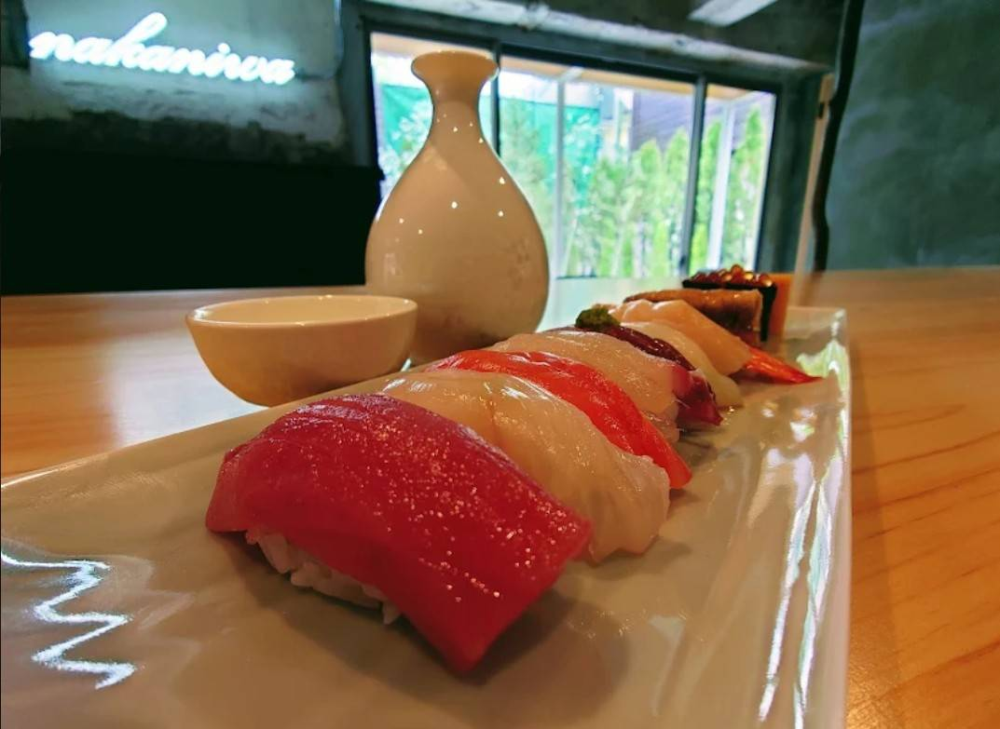
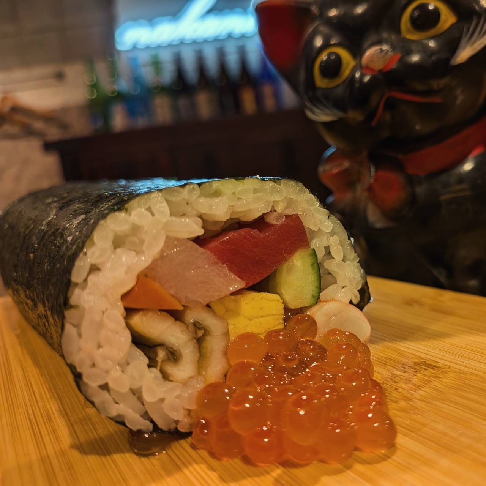
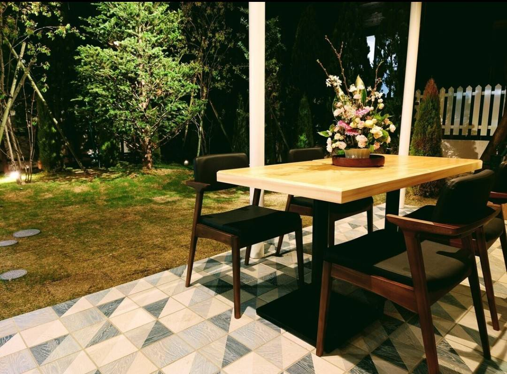
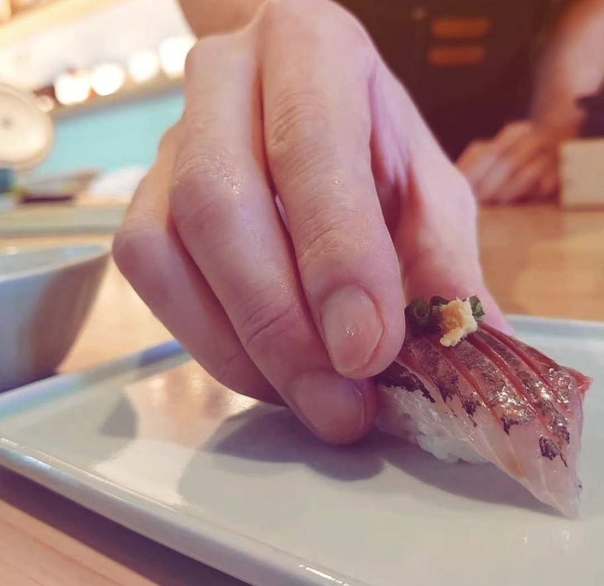
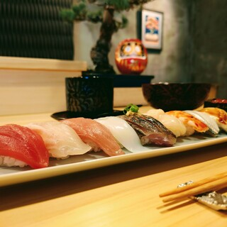
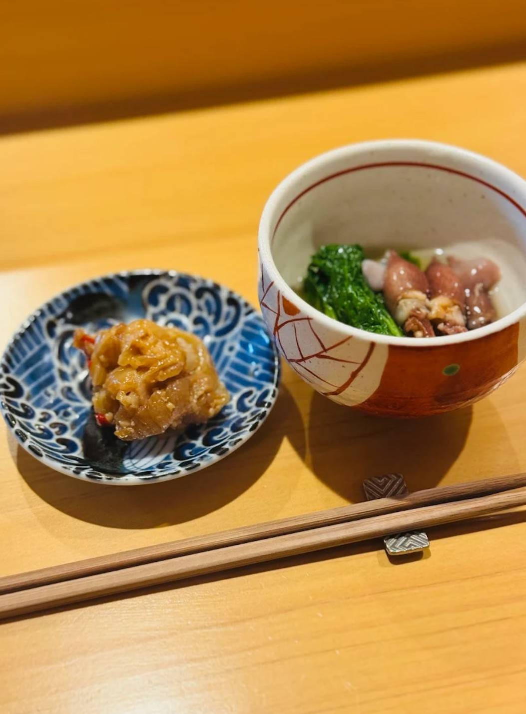
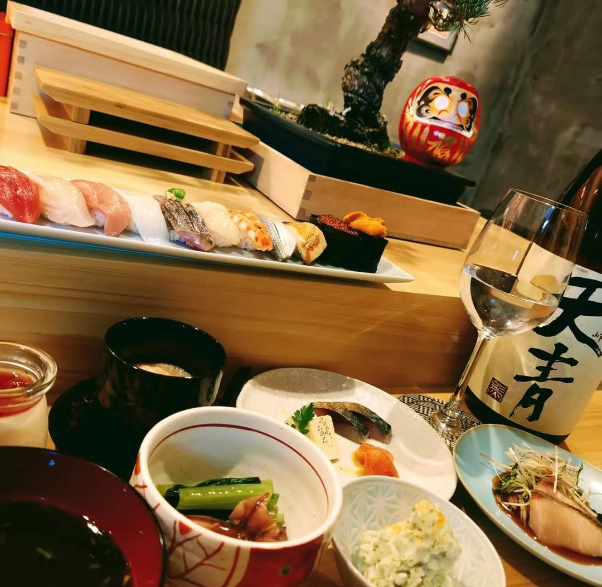
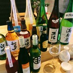
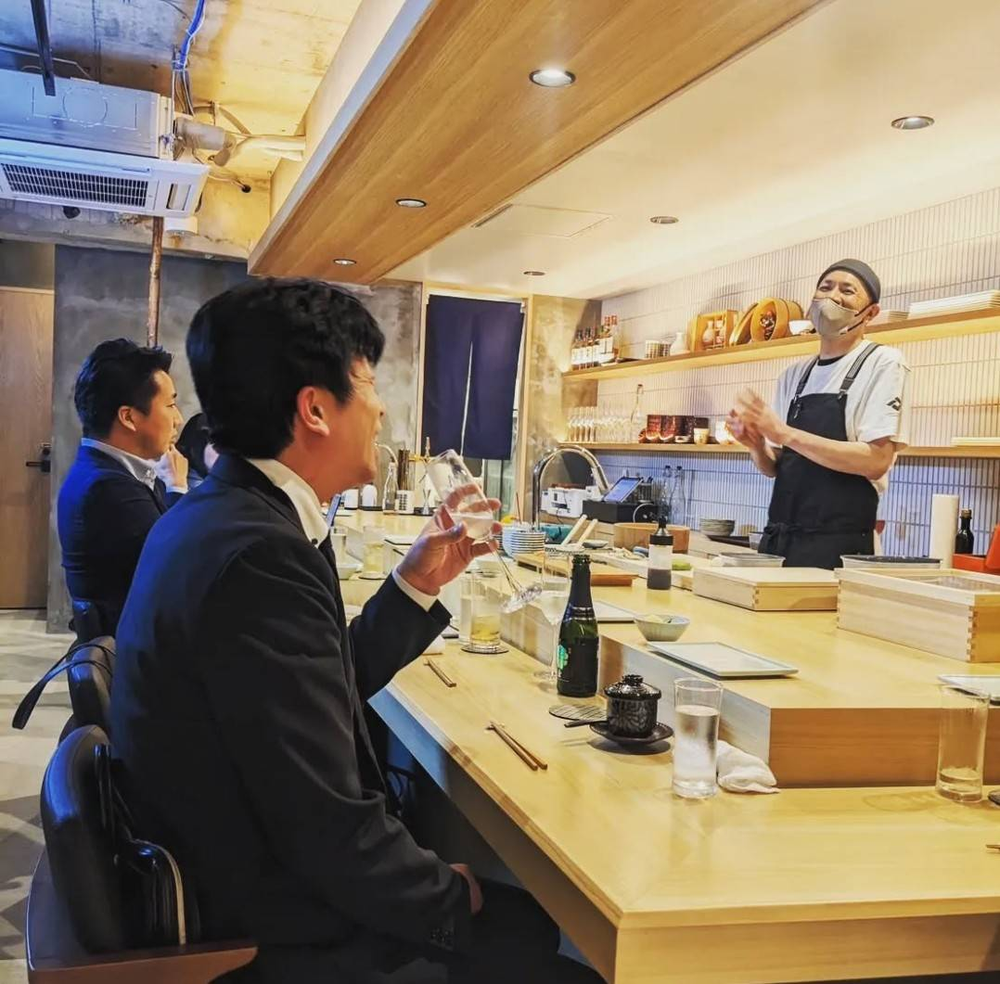

自由なスタイルで楽しむ“江戸前鮨”。
スタイリッシュでカジュアルな寿司屋
鎌倉駅からほど近く、「LAMP雪ノ下」に店を構える当店。
新鮮なお魚や旬素材を使った江戸前鮨を、肩ひじ張らずに味わえるのが魅力です。
逸品揃いのおまかせコースのほか、お好きなものをお選びいただけるプランもご用意。厳選した日本酒や地ビールとともに、様々なシーンでお立ち寄りください。


温もりあるモダン空間
中庭のテラス席も
落ち着いて過ごせる雰囲気の店内には、ライブ感溢れるカウンター10席をご用意。また、イングリッシュガーデンをイメージした中庭には、肩の力を抜いてお過ごしいただけるテラス席もございます。
お品書き

昼・夜【おまかせ】
Omakase Course
特上にぎり１２貫、前菜からデザート含め全20品ほど

昼・夜【おきまり】
Okimari Course
上にぎり１０貫＋玉子焼き、茶碗蒸しとお味噌汁付き

アラカルト
A La Carte
アラカルトでのご注文も可能です。旬の逸品や握りを一貫からお愉しみいただけます。
お店のこだわり

料理 - Food
確かな目利きで仕入れる美味しいお魚を使った、江戸前鮨をご提供。厳選した秋田県産のお米と、赤酢を使用せずシンプルな白酢を使用したシャリが、ネタを引き立てます。コースは、お客様のご要望にお答えできるよう、「おきまり」「おまかせ」の2つのプランをご用意。その時々の食材を取り入れたお寿司12貫を中心に、自慢の逸品をどうぞ。季節の恵みを活かして作る、アラカルトメニューもお楽しみください。

飲料 - Drink
お寿司との相性を考えたお飲み物は、地元の酒屋と相談しながら様々な店を回り、自ら仕入れ。なかでもこだわったのは日本酒。選りすぐりの銘酒を、常時約10種類ご用意しております。季節によって顔ぶれを変えておりますので、その時ならではの美味しさに出会えます。冷はワイングラスでお洒落に乾杯を。飲みやすい鎌倉のクラフトビール「ヨロッコビール」は、ユニークなラベルにもご注目。お好みに合わせてお楽しみください。

料理人 - Chef
料理人の斉藤は、約25年にわたって和洋中と幅広いジャンルの料理店を経験。帰り道にフラっと気軽に立ち寄れる、街の寿司屋となるよう【鮨ト酒ナカニワ】をオープンさせました。一番の喜びは、お客様とのコミュニケーション。目の前でお料理を提供し、直接感想をいただくことで、新たな発見ややりがいが生まれます。リラックスしてお食事ができるよう、心がけておもてなしいたします。皆様のご来店をお待ちしております。

店舗情報
昼: 4,000円～4,999円
夜: 6,000円～7,999円